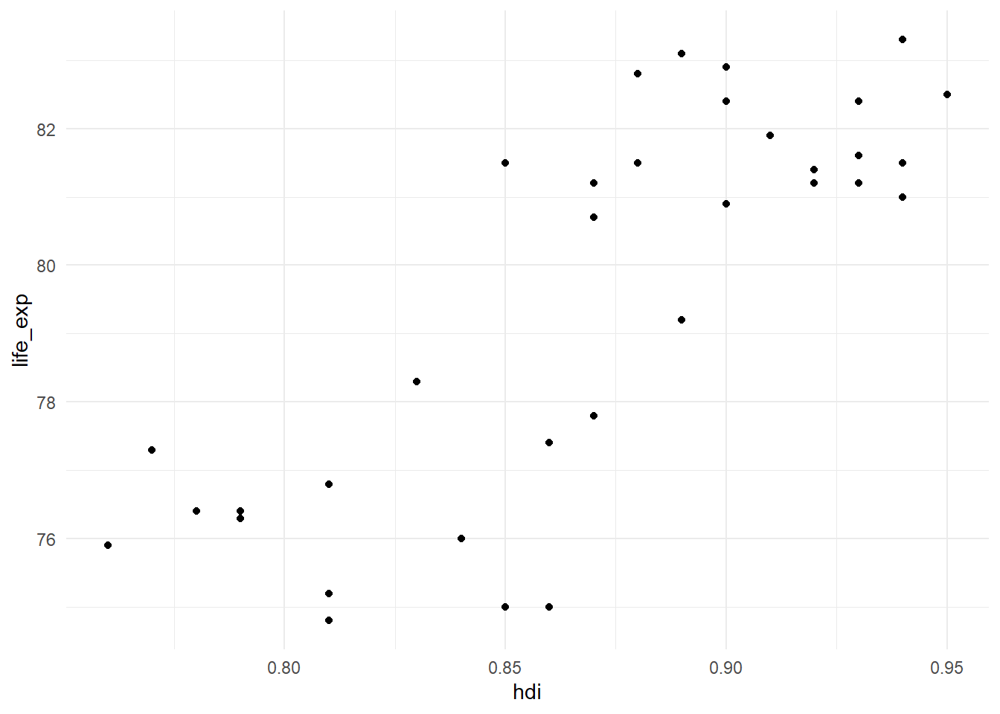
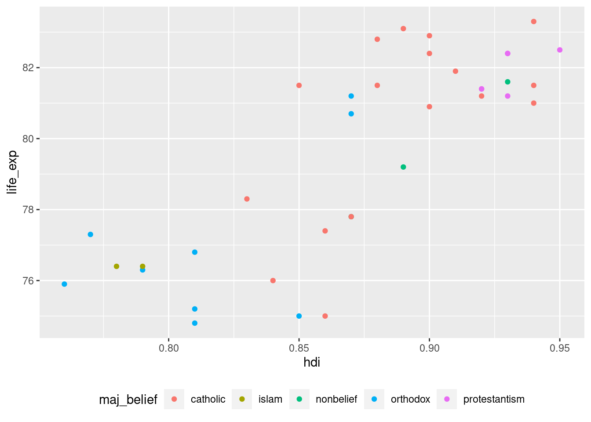
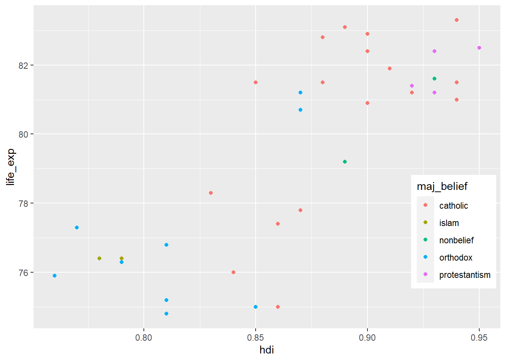

Vizualizace dat - vzhled grafů
Tyto materiály popisují upravování vzhledů grafů vytvořených pomocí balíčku ggplot2.
Vlastnosti geomů
Většina geomů má argumenty, kterými můžeme kontrolovat jejich vzhled. Těmito argumenty zpravidla jsou velikost (size), barva obrysu (color), barva výplně (fill), průhlednost (alpha) a v určitých případech i tvar (shape).
Barvy
V R je možné barvy specifikovat dvěma způsoby. Tím prvním je využít některou z předpřipravených barev. Seznam předpřivaných barev je možné pomocí funkce demo("colors") (případně pouze názvy pomocí colors()). Druhou možností je využít hex kód, tedy kód určijící přesnou barvu, odstín a tmavost.
Pokud bychom chtěli pro náš sloupcový graf použít předpřipravenou barvu s názvem “wheat”:
countries %>% count(maj_belief) %>%
ggplot(aes(x = maj_belief, y = n)) +
geom_col(fill = "wheat")
Případně můžeme využít hex kód:
countries %>% count(maj_belief) %>%
ggplot(aes(x = maj_belief, y = n)) +
geom_col(fill = "#f9d9b4")
Určitou zákeřností je, že barva výchozích bodů v geom_point je kontrolována pomocí color, ne fill:
ggplot(aes(x = hdi, y = life_exp), data = countries) + geom_point(color = "orange")## Warning: Removed 1 rows containing missing values (geom_point).
Speciálním případem jsou palety (palettes), tedy sady k sobě ladících barev. Balíček RColorBrewer, nainstalovaný společně s ggplot2, poskytuje základní sadu palet, kterou je možné zobrazit pomocí
library(RColorBrewer)
display.brewer.all()Tyto palety jsou rozděleny do tří skupin. Tou první jsou takzvané sequential palety, tedy palety se stupňující se intenzitou. Ty se hodí zejména pro unipolární škály (např. frekvence výskytu, úroveň vzdělání). Druhou skupinou jsou qualitative, tedy škály používané pokud pokud skupiny nemají pevně dané pořadí (např. pohlaví, náboženská příslušnost). Poslední skupinou jsou diverging škály, které jsou využíváné pro bipolární škály (např. spokjen-nespokojen).
Brewer škály můžeme aplikovat pomocí funkce scale_color_brewer(), ve které argument palette slouží k výběru škály. Pro vytvoření scatterplotu naděje na dožití a HDI, kde jsou barevně odlišené země podle převažujícího náboženství paletou “Set1”:
ggplot(aes(x = hdi, y = life_exp, color = maj_belief), data = countries) + geom_point() +
scale_color_brewer(palette = "Set1")## Warning: Removed 1 rows containing missing values (geom_point).
Případně můžeme nastavit barvy ručně pomocí funkce scale_color_manul() a argumentu values. V takovém případě musí počet barev odpovídat počtu kategorií:
ggplot(aes(x = hdi, y = life_exp, color = maj_belief), data = countries) + geom_point() +
scale_color_manual(values = c("orange", "blue", "green", "yellow", "pink"))## Warning: Removed 1 rows containing missing values (geom_point).
Velikost
Poměrně přímočarým argumentem je size, kterým můžeme kontrolovat velikost objektů:
ggplot(aes(x = hdi, y = life_exp, color = maj_belief), data = countries) + geom_point(size = 4)## Warning: Removed 1 rows containing missing values (geom_point).
Průhlednost
Průhlednost objektů je kontrolována pomocí argumentu alpha. alpha se pohybuje v rozmezí od 0 do 1. alpha = 0 znamená úplně průhledný objekt, alpha = 1 plný objekt.
ggplot(aes(x = hdi, y = life_exp, color = maj_belief), data = countries) + geom_point(alpha = 0.2)## Warning: Removed 1 rows containing missing values (geom_point).
Tvar
Zvláště u bodů využijeme argument shape, určující tvar. Možných tvarů je 25 a jsou kódovány čísly. Pokud bychom chtěli změnit tvar bodů v našem grafu:
ggplot(aes(x = hdi, y = life_exp, color = maj_belief), data = countries) + geom_point(shape = 8)## Warning: Removed 1 rows containing missing values (geom_point).
Osy grafu
Vzhled os grafů je možné upravovat pomocí funckí začínající slovem scale_. Použité funkce se liší podle toho, jestli pracujeme s numerickými nebo kategoriálními proměnými a podle toho, zda chceme upravovat osu x nebo y. Pro numerické proměnné používáme scale_x_continous() a scale_y_Continuous(). Pokud pracujeme s kategorickými proměnnými, používáme scale_x_discrete() a scale_y_discrete().
Rozpětí os
Prvním argumentem těchto funkcí je limits, který kontroluje minimální a maximální hodnoty osy. Pokud bychom chtěli, aby minimum osy x bylo 0.7 a maximum 1:
ggplot(aes(x = hdi, y = life_exp), data = countries) + geom_point() +
scale_x_continuous(limits = c(0.7, 1))## Warning: Removed 1 rows containing missing values (geom_point).
Pokud chceme určit pouze jeden z limitů osy, druhý nahradíme NA:
ggplot(aes(x = hdi, y = life_exp), data = countries) + geom_point() +
scale_x_continuous(limits = c(NA, 1))## Warning: Removed 1 rows containing missing values (geom_point).
Hodnoty os
Pro nastavení popisných hodnot na ose je možné využít argument breaks. breaks by měl být vektor čísel, určující hodnoty, které mají být zobrazeny. Pokud bychom chtěli na ose y mít tři čísla, 75, 80 a 82:
ggplot(aes(x = hdi, y = life_exp), data = countries) + geom_point() +
scale_y_continuous(breaks = c(75, 80, 82))## Warning: Removed 1 rows containing missing values (geom_point).
Pro určení většího počtu hodnot osy se vyplatí využít funkci seq(). Tato funkce vytvoří vektor čísel od určité hodnoty po určitou hodnotu po specifikovaných intervalech. Toho můžeme využít v kombinaci s breaks:
ggplot(aes(x = hdi, y = life_exp), data = countries) + geom_point() +
scale_y_continuous(breaks = seq(from = 75, to = 85, by = 2))## Warning: Removed 1 rows containing missing values (geom_point).
Popisky hodnot os
Třetím užitečným argument je labels, umožňující měnit formu popisky. Tento argument je nejefektivnější v kombinace s funkcemi s balíčkem scales. Pokud bychom chtěli změnit popisky osy z desetiných míst na procenta:
library(scales)
ggplot(aes(x = hdi, y = life_exp), data = countries) + geom_point() +
scale_x_continuous(labels = percent_format())## Warning: Removed 1 rows containing missing values (geom_point).
U kategoriálních proměnných můžeme využít scale_x_discrete() (případně scale_y_discrete()) k změně popisků:
countries %>% count(maj_belief) %>%
ggplot(aes(x = maj_belief, y = n)) +
geom_col() +
scale_x_discrete(labels = c("nonbelief" = "atheist/agnostic",
"catholic" = "catholicism")) ## Pořadí kategorií
## Pořadí kategorií
U kategoriálních proměnných je často třeba změnit pořadí kategorií na ose. Pořadí kategorií je určeno pořadím úrovní faktorů. Nejjednoduší je tedy změnit ten.
Nejpřímočařejší cestou je nastavit pořadí ručně pomocí fct_relevel():
countries %>% count(maj_belief) %>%
mutate(maj_belief = fct_relevel(maj_belief,
"nonbelief",
"catholic",
"protestantism",
"orthodox",
"islam")) %>%
ggplot(aes(x = maj_belief, y = n)) +
geom_col() Alternativně můžeme můžeme kategorie seřadit podle hodnot jiné proměnné, napříkald frekvence výskytu:
Alternativně můžeme můžeme kategorie seřadit podle hodnot jiné proměnné, napříkald frekvence výskytu:
countries %>% count(maj_belief) %>%
mutate(maj_belief = fct_reorder(maj_belief, n)) %>%
ggplot(aes(x = maj_belief, y = n)) +
geom_col()
Občas nám bude stačit pořadí kategorií obrátit:
countries %>% count(maj_belief) %>%
mutate(maj_belief = fct_rev(maj_belief)) %>%
ggplot(aes(x = maj_belief, y = n)) +
geom_col()
Popisky grafu (labels)
Popisky grafu a os je možné měnit pomocí funkce labs(). POmocí této funkce je možné nastavit název, podnázev a popisek grafu a názvy os:
ggplot(aes(x = hdi, y = life_exp), data = countries) + geom_point() +
labs(x = "Human Development Index",
y = "Life expectency at birth",
title = "Life expectancy at birth and Human Development index",
subtitle = "European countries",
caption = "Data source: Eurostat 2018")## Warning: Removed 1 rows containing missing values (geom_point).
Facety (facets)
Občas chceme místo jednoho velkého grafu skupinku menších, tříděných podle určité proměnné. K tomu slouží takzvané facety. K využití facet můžeme několik funkcí, začínajích slovem facet_. Hlavním argumentem je facets, který je ve tvaru formule, tedy tilda (~) a název proměnné, podle které chceme filtrovat. Funkce facet_wrap() grafy skládá postupně vedle sebe. U této funkce si můžeme také zvolit počet grafů ve sloupci/řádku.
ggplot(aes(x = hdi, y = life_exp), data = countries) + geom_point() +
facet_wrap(~maj_belief, ncol = 2)## Warning: Removed 1 rows containing missing values (geom_point).
Ve výchozím nastavení mají všechny facety (minigrafy) stejné rozpětí os, což nemusí být vždy vhodné. Rozpětí os můžeme uvolnit pomocí argumentu scales = "free" (případně můžeme uvolnit pouze jednu z os pomocí "free_x" a "free_y"):
ggplot(aes(x = hdi, y = life_exp), data = countries) + geom_point() +
facet_wrap(~maj_belief, scales = "free")## Warning: Removed 1 rows containing missing values (geom_point).
Facety mohou být definovány více než jednou proměnnou. V takovém případě se často vyplatí využít funkce facet_grid(), která nám umožní vytvořit “kontingenční tabulku” grafů:
ggplot(aes(x = hdi, y = life_exp), data = countries) + geom_point() +
facet_grid(di_cat~postsoviet)## Warning: Removed 1 rows containing missing values (geom_point).
Celková kompozice (themes)
Celkový vzhled/kompozici je možné upravovat pomocí funkce theme(). ggplo2 obsahuje několik předpřipravných kompozic, která nám umožňují rychle upravovat celkový vzhled grafu. Těmi jsou:
theme_grey()(výchozí theme)theme_bw()theme_linedraw()theme_light()theme_dark()theme_minimal()theme_classic()theme_void()
Pro využití těchto kompozic stačí připojit příslušnou funkci ke grafu:
ggplot(aes(x = hdi, y = life_exp), data = countries) + geom_point() +
theme_minimal()## Warning: Removed 1 rows containing missing values (geom_point).
Kromě předpřipravených funkcí je možné vytvořit si vlastní pomocí funkce theme(). Tato funkce má velkou řadu argumentů, nicméně jeden z nich je využíván velmi často a to je legend_position. Ta nám umožňuje měnit pozici legendy a to buď na předem připravená místa (“left”, “right”, “top” a “bottom”):
ggplot(aes(x = hdi, y = life_exp, color = maj_belief), data = countries) + geom_point() +
theme(legend.position = "bottom")## Warning: Removed 1 rows containing missing values (geom_point).
Případně je možné specifikovat pozici legendy pomocí koordinátů. Kordináty pro obě osy (x a y) mohou nabývat hodnot 0 až 1, kdy (0,0) odpovídá levému dolnímů rohu grafu, (1,1) pravému hornímu rohu a (0.5, 0.5) je střed grafu:
ggplot(aes(x = hdi, y = life_exp, color = maj_belief), data = countries) + geom_point() +
theme(legend.position = c(0.9, 0.3))## Warning: Removed 1 rows containing missing values (geom_point).